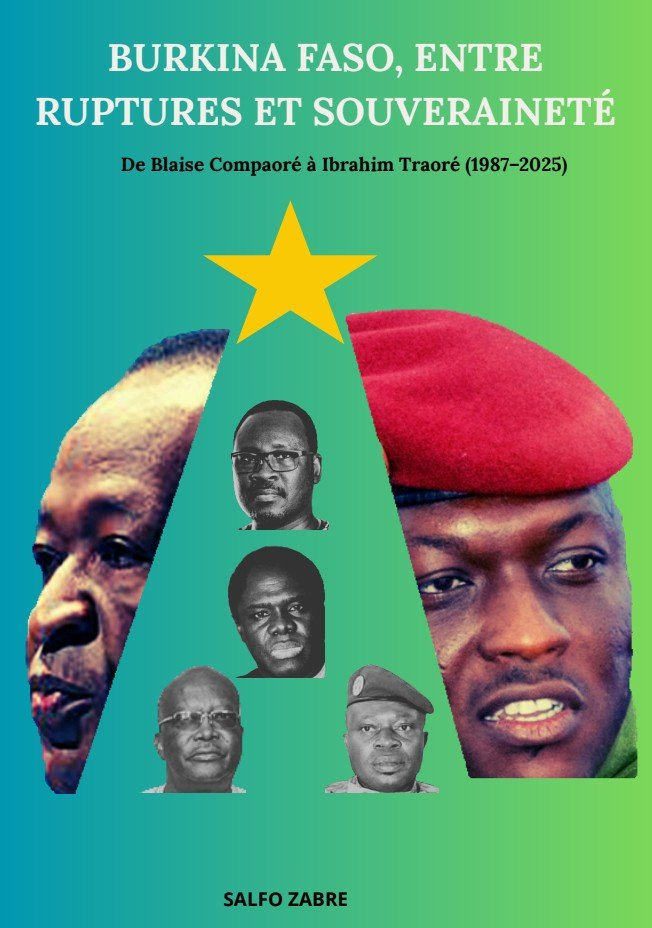

À propos

Je suis Salfo ZABRE, journaliste à La Plume depuis 2024. J'interviewe, je cherche l'angle et j'écris pour le grand public au quotidien, sur des sujets très variés.
Ce métier m'a appris à faire parler les gens, à repérer ce qui compte vraiment dans un parcours et à l'écrire clairement. Mes prestations sont une activité indépendante, distincte de mon travail de journaliste.
Quelques-uns de mes articles
Mon livre

Burkina Faso, entre ruptures et souveraineté
Depuis la fin des années 1980, le Burkina Faso traverse des transformations politiques majeures, marquées par des ruptures, des mobilisations populaires et une quête constante de souveraineté. Mon livre retrace ce parcours, de l'arrivée au pouvoir de Blaise Compaoré en 1987 à la transition conduite par le capitaine Ibrahim Traoré.
Formation et crédibilité
Mon activité s'appuie sur mon expérience journalistique et sur des compétences complémentaires en communication numérique.
Journalisme
Journaliste à La Plume depuis 2024, avec une pratique quotidienne de l'interview, de la recherche d'angle et de la rédaction.
Réputation numérique
Attestation Atingi : « Comment gérer votre réputation numérique ».
Communication visuelle
Création de visuels, affiches, logos et contenus destinés aux réseaux sociaux et à la communication des activités.
Mes services
Un accompagnement pratique pour vous aider à mieux prendre la parole, présenter votre activité et développer votre présence en ligne.
Rédaction et contenus
Posts LinkedIn et Facebook, articles web, tribunes, newsletters, textes institutionnels et contenus adaptés à votre public.
Communication digitale
Gestion de pages Facebook, calendrier éditorial, publication et programmation de contenus, accompagnement de votre présence numérique.
Interviews écrites et vidéo
Préparation, conduite et mise en forme d'interviews. Texte relu et prêt à publier, ou vidéo montée et sous-titrée.
Création graphique
Affiches, visuels pour les réseaux sociaux, supports de communication et créations graphiques adaptées à votre activité.
Identité visuelle
Création de logos et éléments graphiques pour donner à votre activité une identité claire, cohérente et professionnelle.
Réputation numérique
Accompagnement et bonnes pratiques pour mieux gérer votre image en ligne. Formation attestée par Atingi.
Comment ça marche
Un appel
Pour recueillir vos idées, anecdotes et prises de position.
J'écris
Je rédige vos contenus dans votre ton et votre vocabulaire.
Vous publiez
Vous validez puis publiez, ou je programme les publications selon la formule.
Formules et prestations
Des formules mensuelles pour les besoins réguliers. Pour une affiche, un logo, une interview ou une prestation ponctuelle, le tarif est établi selon le projet.
Facebook PME
75 000 FCFA / mois
- Gestion de la page Facebook
- 3 à 4 publications par semaine
- Textes et légendes
- Idéal pour commerces et PME
Essentiel
150 000 FCFA / mois
- 2 posts par semaine
- 8 par mois
- 1 appel mensuel
- 1 série de corrections incluse
Visibilité
250 000 FCFA / mois
- 3 posts par semaine
- 12 par mois
- 1 appel mensuel
- Programmation des publications
Complet
500 000 FCFA / mois
- 12 posts
- 1 tribune ou newsletter
- 2 appels par mois
- Bilan mensuel de l'audience
Affiches, logos, interviews, vidéos et autres prestations ponctuelles : tarif sur devis selon le projet.
Premier mois d'essai à tarif réduit pour les 3 premiers clients.
Interviews prêtes à publier
J'interviewe le dirigeant, l'expert ou l'entrepreneur, puis je vous livre le contenu fini.
Interview en texte
Article ou série de posts, relu et corrigé, prêt à publier.
Interview en vidéo
Montée, sous-titrée, prête pour Facebook, LinkedIn ou TikTok.
Tarif sur devis selon le format.
Ce que je peux créer pour vous
Posts et articles
Des textes clairs, crédibles et adaptés à votre public, avec une attention particulière portée à l'angle et au message.
Affiches et logos
Des créations graphiques pour annoncer, présenter ou donner une identité visuelle à votre activité.
Interviews et contenus courts
Des vidéos montées et sous-titrées pour Facebook, LinkedIn, TikTok ou vos supports de communication.
Pour qui ?
Parlons de votre projet
Un premier échange pour comprendre votre besoin et vous proposer une prestation adaptée : rédaction, communication digitale, graphisme, interview ou réputation numérique.
WhatsApp : +226 72 03 01 54 · salfozabre850@gmail.com